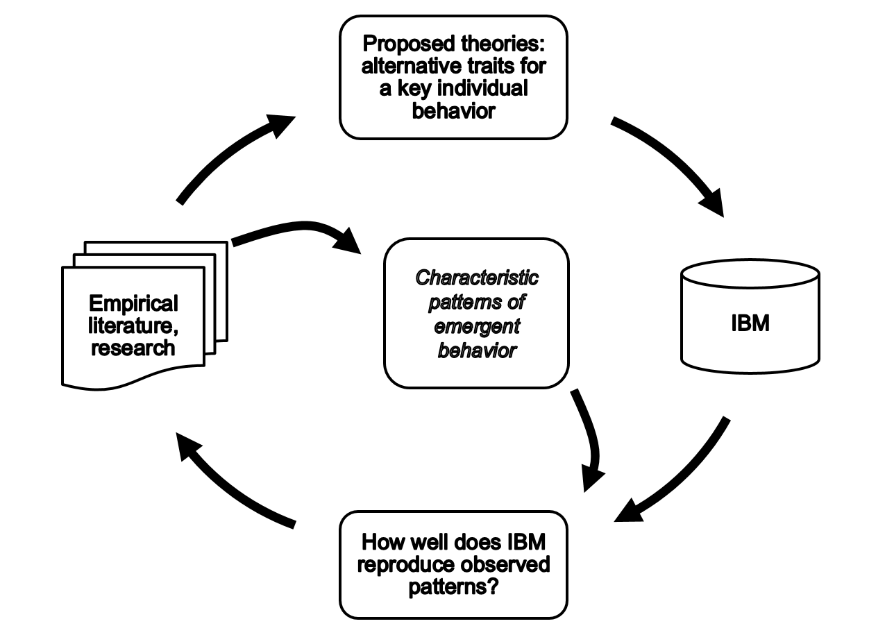
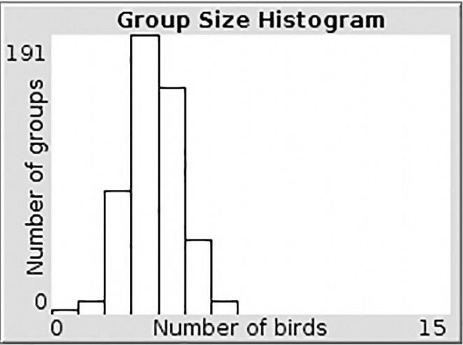

https://www.ees4760.jgilligan.org/downloads/hoopoe_class_21/

Using zero-intelligence as a baseline, the researcher can ask: what is the minimal additional structure or restrictions on agent behavior that are necessary to achieve a certain goal.
Characteristic group size distribution (adults)

Average age of birds on scouting forays is younger than
average age of all subordinates.
Scouting forays most common April–October
https://ees4760.jgilligan.org/models/class_21/wood_hoopoe_strategies.nlogo
p-scout.